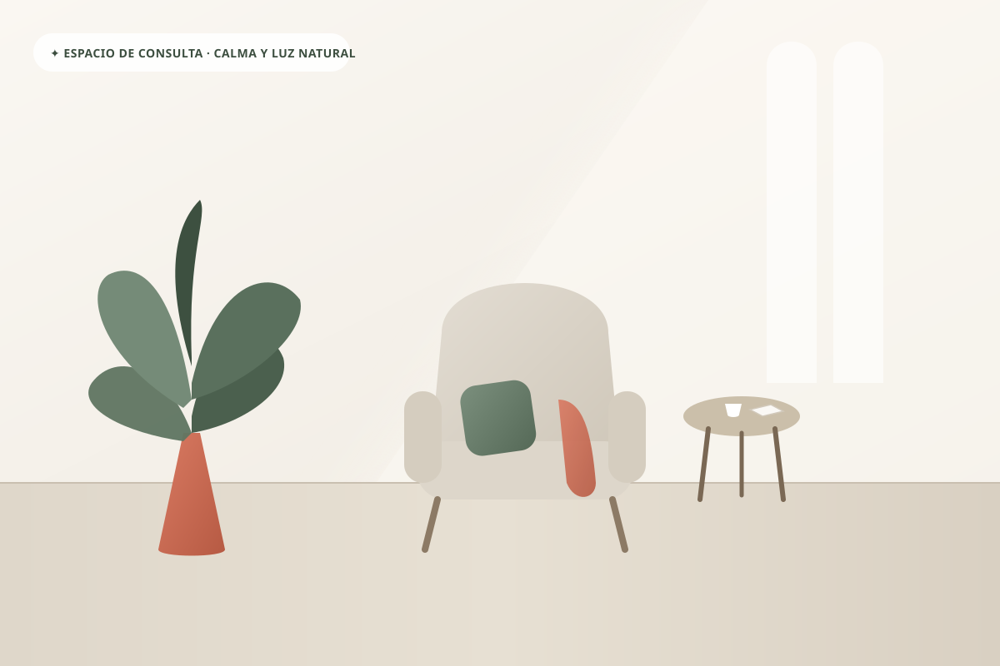
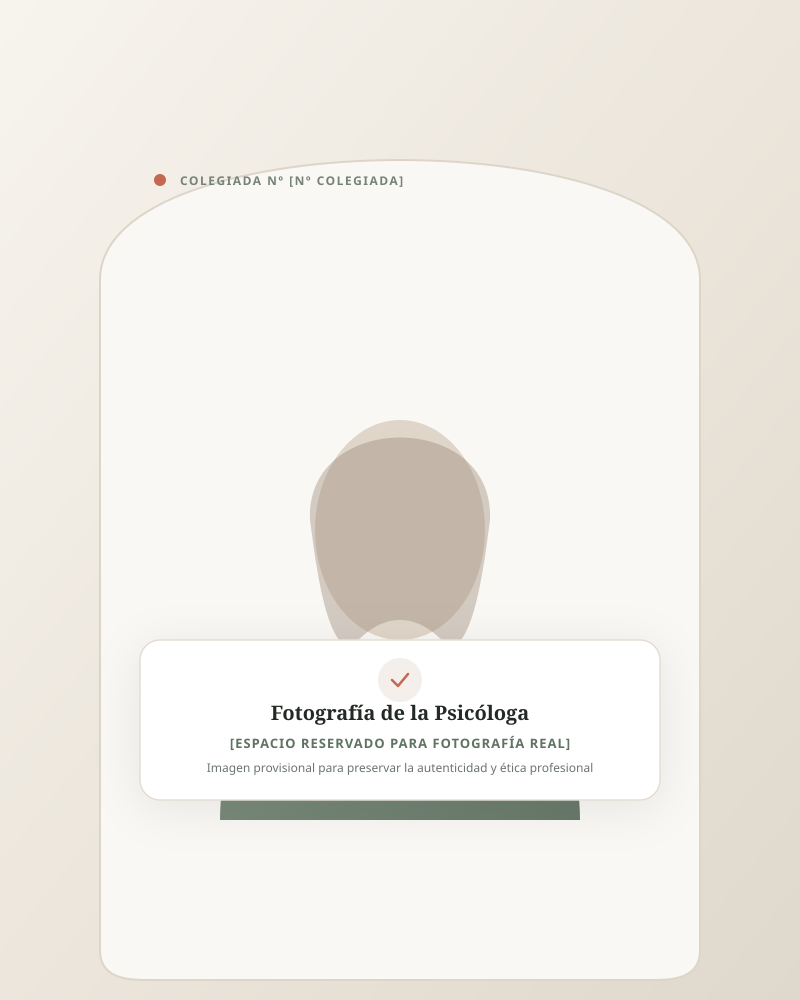

Preocupación constante y sobrecarga mental
Sientes que tu cabeza no descansa, anticipando problemas futuros o revisando mentalmente cada detalle. Una sensación continua de alerta interna y tensión en el cuerpo que dificulta desconectar y descansar.
Soy [NOMBRE], psicóloga [TITULACIÓN VERIFICADA: Graduada en Psicología y Máster en Psicología General Sanitaria]. Te acompaño a explorar lo que estás viviendo y a trabajar en cambios que tengan sentido para ti, desde una atención cercana, respetuosa y adaptada a tus necesidades.

A veces no sabemos nombrar con exactitud lo que nos ocurre, pero sí sentimos que algo nos pesa o nos sobrepasa en el día a día.
Sientes que tu cabeza no descansa, anticipando problemas futuros o revisando mentalmente cada detalle. Una sensación continua de alerta interna y tensión en el cuerpo que dificulta desconectar y descansar.
Tiendes a priorizar el bienestar de los demás por encima de tus propias necesidades. Decir no te genera culpa o miedo al conflicto, lo que poco a poco te lleva al agotamiento emocional y al resentimiento.
Una ruptura sentimental, un cambio laboral, una pérdida significativa o simplemente la sensación de que la etapa vital en la que estabas ya no encaja contigo y necesitas redescubrir quién eres ahora.
Una voz autocrítica que te recuerda constantemente lo que podrías haber hecho mejor. La sensación de que nunca es suficiente y la dificultad para reconocer tus logros y tratarte con amabilidad.
Aclaración importante: Estas situaciones describen vivencias humanas frecuentes que atendemos en consulta; en ningún caso constituyen una etiqueta médica ni un diagnóstico psicológico.
Trabajo desde un marco integrativo basado en la evidencia empírica. Cada proceso se adapta a tu historia y a tus ritmos, sin fórmulas rígidas ni promesas vacías.
La ansiedad no es un enemigo que haya que erradicar a cualquier precio, sino una señal de alarma de nuestro sistema nervioso que ha aprendido a sobreactivarse.
La verdadera autoestima no consiste en repetir afirmaciones positivas frente al espejo, sino en construir una relación honesta, compasiva y sólida con quien eres hoy.
Las relaciones son el espejo de cómo nos cuidamos y cómo aprendimos a vincularnos con los demás desde nuestras primeras experiencias de apego.
Afrontar un cambio significativo duele porque importa. Elaborar un duelo no es olvidar lo vivido, sino aprender a colocarlo en un lugar donde no duela permanentemente.

Hola, soy [NOMBRE]. Concibo la psicoterapia no como un manual de instrucciones estándar, sino como una alianza de colaboración genuina, donde tú eres la persona experta en tu propia vida y yo pongo a tu servicio mis conocimientos clínicos.
En la consulta no encontrarás miradas condescendientes ni juicios de valor. Mi compromiso es ofrecerte un espacio de serenidad, escucha activa y absoluta confidencialidad, donde puedas depositar lo que te preocupa con la certeza de sentirte escuchada y acompañada.
[Licenciada / Graduada en Psicología · Máster en Psicología General Sanitaria]
Colegiada Nº [Nº COLEGIADA] en el Colegio Oficial de la Psicología de [CIUDAD/COMUNIDAD]
Terapias de Tercera Generación (ACT, CFT y Terapia Cognitivo-Conductual Basada en Apego)
Adhesión plena al Código Deontológico y formación continuada basada en evidencia
Creo firmemente que la terapia es un proceso vivo: no se trata de encajarte en una teoría, sino de adaptar la psicología a tu realidad y a lo que tú necesitas en este momento.
Descubre cómo trabajaremos juntosUn proceso estructurado, transparente y libre de incertidumbre para que sepas qué esperar en cada etapa.
Seleccionas la modalidad que prefieras (online o presencial en [CIUDAD]) y la hora que mejor se adapte a tu agenda contactando directamente con la consulta.
Nos conocemos con calma. Me cuentas qué te ha animado a consultar, exploramos qué estás experimentando y resolvemos todas tus dudas sobre la forma de trabajar.
Definimos de mutuo acuerdo qué metas tienen sentido para ti. No hay un número prefijado de sesiones: ajustamos la frecuencia según tus avances y disponibilidad.
Hacemos paradas periódicas para evaluar cómo te sientes y consolidar los cambios. Conforme ganas autonomía, espaciamos las sesiones hacia el cierre del proceso.
Cada persona tiene sus propios tiempos. La terapia no es una carrera lineal; es un espacio seguro donde avanzar, detenerse a reflexionar y retomar con calma.
Es natural sentir cierta inquietud antes del primer contacto. Queremos que llegues con total tranquilidad.
Dedicamos el tiempo a escucharte sin prisas. No te someteré a un interrogatorio incómodo; simplemente hablaremos sobre lo que te ocurre, qué sientes y qué te gustaría conseguir.
Si no sabes por dónde empezar o te cuesta poner en palabras tu malestar, no te preocupes: te guiaré con preguntas suaves para que te sientas cómoda en todo momento.
La sesión dura aproximadamente 50 - 60 minutos. No necesitas preparar nada especial de antemano ni traer un discurso redactado.
Solo necesitas un espacio tranquilo si es online, o llegar con unos minutos de antelación si nos vemos en la consulta de [CIUDAD].
El primer encuentro sirve también para que tú valores si te sientes a gusto conmigo y si encajo con lo que estás buscando.
La alianza terapéutica requiere conexión y sintonía humana. Tienes total libertad para decidir si deseas continuar o no tras este primer encuentro.
Tarifas claras, sin costes ocultos ni paquetes forzados. Puedes elegir la modalidad que mejor se adapte a tu estilo de vida.
Atención psicológica por videoconsulta confidencial y segura desde el lugar donde te encuentres.
Un entorno cálido, luminoso y protegido en el centro de [CIUDAD] para trabajar cara a cara.
Bizum profesional, transferencia bancaria o tarjeta tras cada sesión. Se emite factura oficial con validez fiscal y sanitaria.
Puedes cancelar o cambiar tu cita sin ningún coste avisando con al menos 24 horas de antelación, para que otra persona pueda ocupar ese hueco.
Respuestas directas a las inquietudes más habituales antes de comenzar un proceso de terapia.
No es necesario estar en una situación límite ni experimentar una crisis devastadora para consultar. Si sientes que la preocupación te desgasta, que te cuesta gestionar tus emociones, que tus relaciones te generan sufrimiento o simplemente deseas entenderte mejor, la terapia puede ser un recurso valioso para ti.
Al inicio suele recomendarse una frecuencia semanal o quincenal para crear un espacio de trabajo sólido. Conforme vayas notando avances y sintiéndote con más recursos, espaciaremos las sesiones a tres semanas o mensuales. La duración total depende de tus objetivos personales y necesidades; revisaremos el proceso periódicamente juntos.
Todo lo que hables en consulta está estrictamente protegido por el secreto profesional y el Código Deontológico de la Psicología. Tus datos se tratan conforme al RGPD y la Ley de Autonomía del Paciente. Los únicos límites que contempla la ley son situaciones de riesgo inminente grave para la propia vida del paciente o de terceras personas, o por mandato judicial legal expreso.
Sí. Numerosos estudios científicos confirman que la psicoterapia online ofrece la misma eficacia clínica y vinculación terapéutica que la presencial para problemáticas como ansiedad, autoestima, duelo o dificultades relacionales, con la ventaja añadida de evitar desplazamientos.
La psicóloga sanitaria cuenta con titulación universitaria oficial de grado y máster sanitario, colegiación regulada y trabaja sobre los procesos emocionales, cognitivos y conductuales a través de la psicoterapia. La psiquiatra es médico especialista y puede prescribir psicofármacos cuando es necesario (a menudo colaboramos coordinadamente). El coaching no es una profesión sanitaria ni está habilitado para tratar problemas de salud mental o sufrimiento psicológico.
Entiendo que surgen imprevistos. Puedes modificar o cancelar tu cita sin coste avisando con al menos 24 horas de margen. Las cancelaciones con menor antelación o no comparecencias conllevan el abono de la sesión, ya que ese espacio temporal queda reservado en exclusiva para ti y no puede ofrecerse a otra persona.
Artículos y reflexiones de la consulta.
Consulta disponibilidad y elige la modalidad que mejor encaje contigo.
No necesitas explicarlo todo ahora. Puedes escribir para consultar horarios, tarifas o cómo empezar.
Los datos de contacto estarán disponibles próximamente.
La cita se confirma directamente con la profesional. Evita enviar información clínica sensible por estos canales.